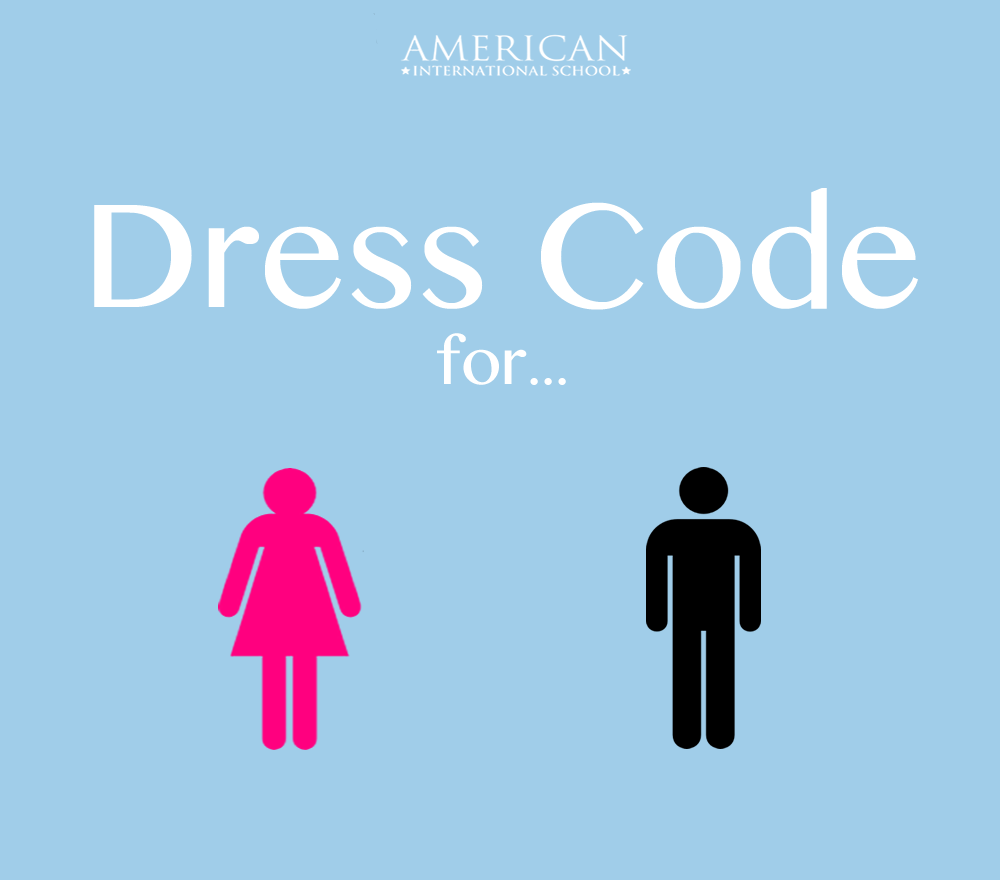

First, we had to create a wireframe that shows the layout of our website. It doesn't have to be complicated because we can decorate it later when doing the storyboard.
Strength: Simple and clear, shows and only shows the layout
Weakness: Ugly, does not show context
Then, we had to create the storyboard from the wireframe.
Strength: Shows the colors and pictures, can be shown for communication with client
Weakness: Prettier and more presentable than the wireframe

Strength: More flexible in terms of movement of images (you can easily drag to its wanted place)
Weakness: Less flexible in terms of CSS and additional features
Strength: It has a 'split' function where you can view your html along with the visual.
Weakness: It is more time consuming in terms of placing the images and getting them in the right spots.